Правки к v8
Баллы фиолетовые, блик ярче, итоги прогнозов без зелёного и красного, выбранное — вариант с фиолетовым. Жми «⧉ выбрать» в углу варианта — по одному в каждом блоке. В буфер копируется весь список выбранного, его и пришли.
Баллы — фиолетовые без золота и зелёного
Монета — #3f238b. Цифры «+80», «+50» были зелёными. А — белые цифры, Б — плашки.


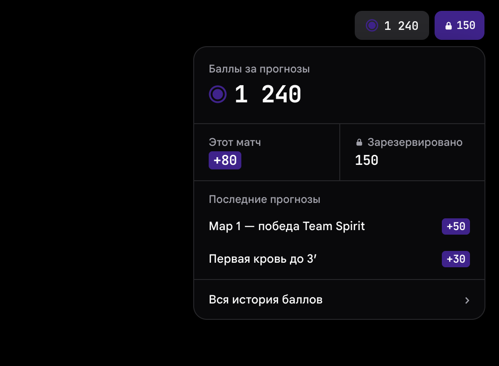
Монета — #3f238b.


Прогнозы
Блик ярче и шире, с лёгким свечением. Блик крутится, на скринах он остановлен в одном месте.
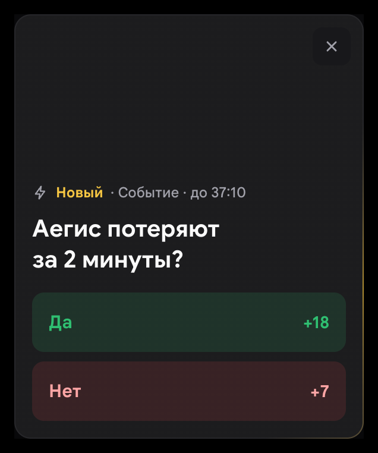
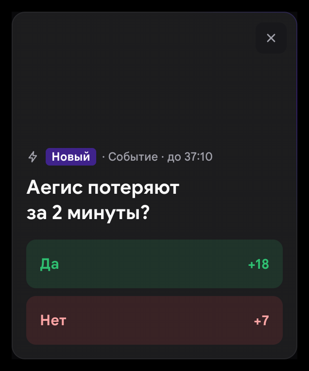

Зелёный и красный убраны: это цвета Radiant и Dire. Угадал — полоса и «✓ +13» фиолетовые. Мимо — серая полоса. А — мимо штрихом, Б — мимо сплошным серым, В — угадал белым, мимо штрихом. «Получено +20» — белым.

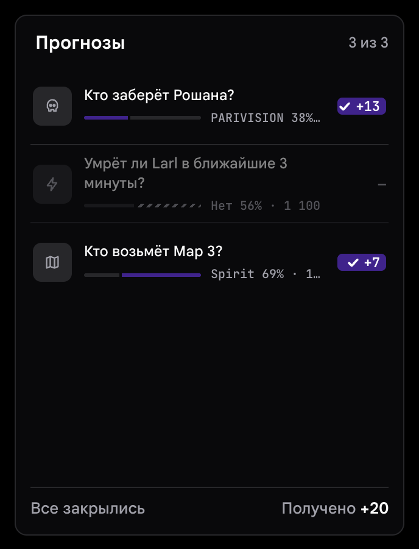
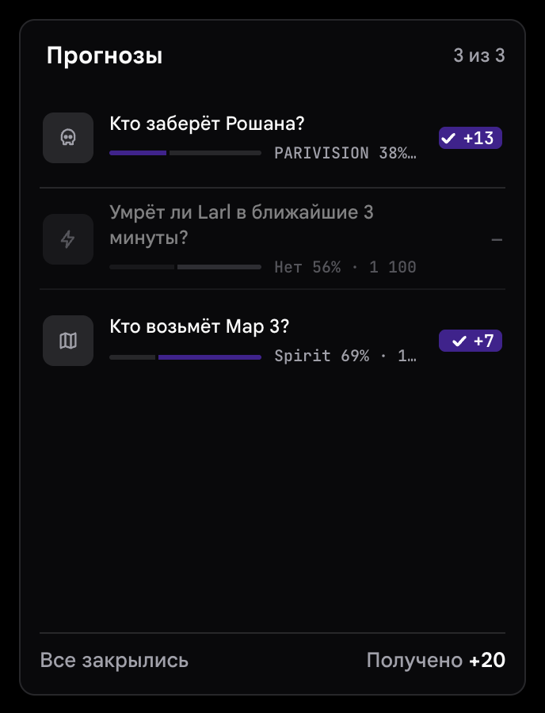
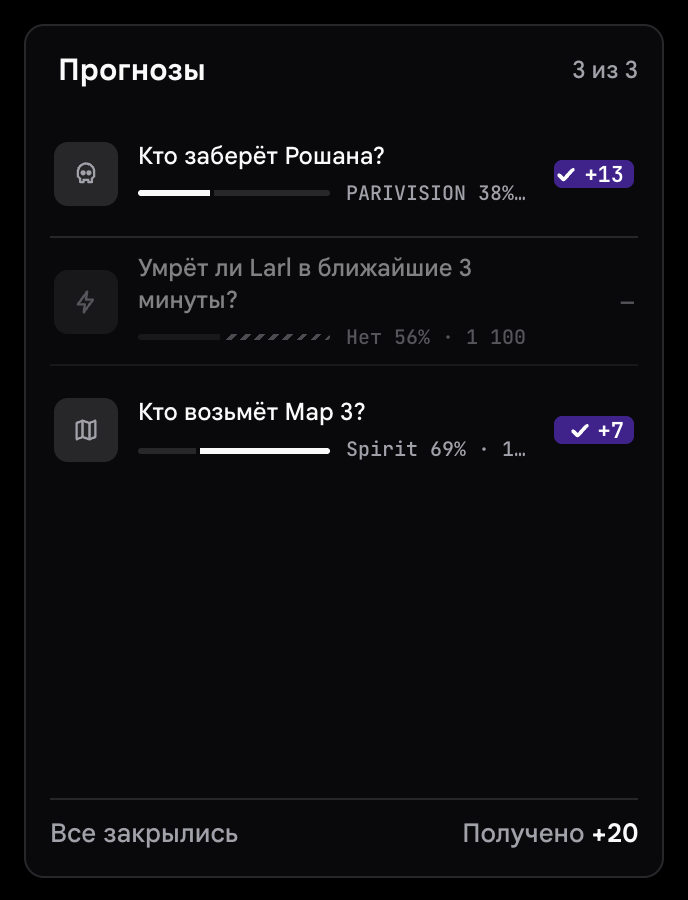
Ответ «Да» / «Нет» — серая метка, без зелёного и красного.
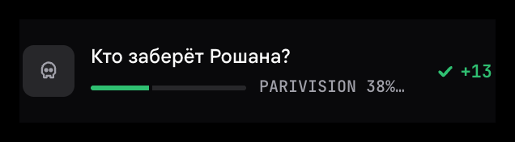
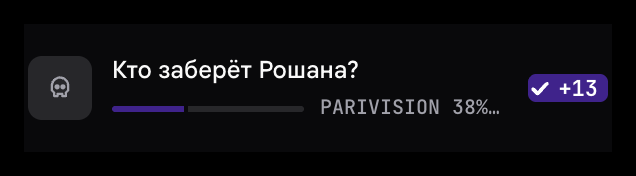

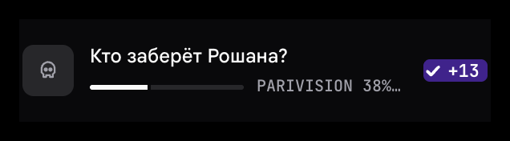
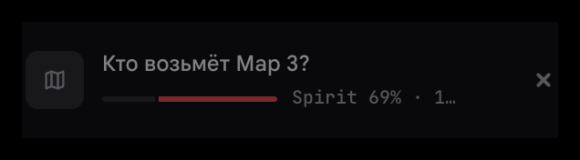
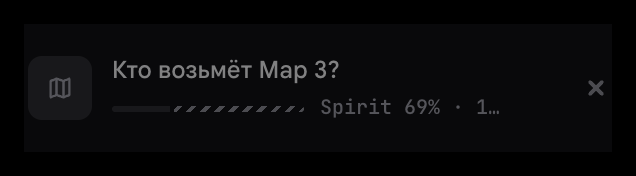
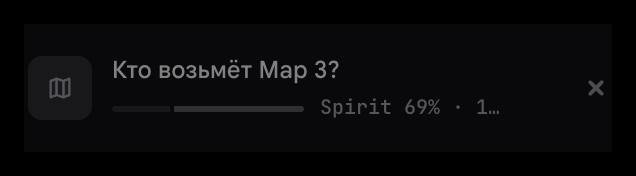

Выбранное — серым или фиолетовым


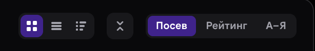

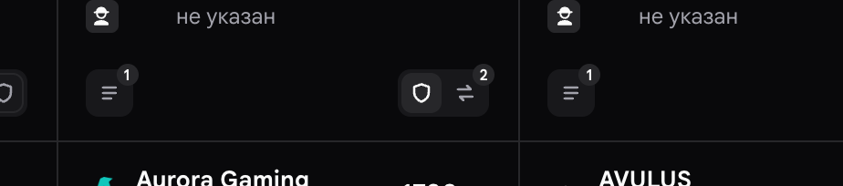


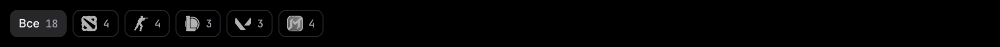
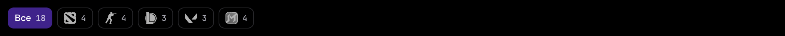
Ещё
- ‼️ Кнопки «Да» / «Нет» на карточке прогноза — тоже зелёная и красная, на них баллы «+18», «+7». Перекрашивать? Скажи, сделаю варианты.
- Решено и не меняется: «Все 18» серым — правим (если не выберешь фиолетовый выше); Рошан и значки позиций — оставляем.
- Остальные пункты — как в v8.